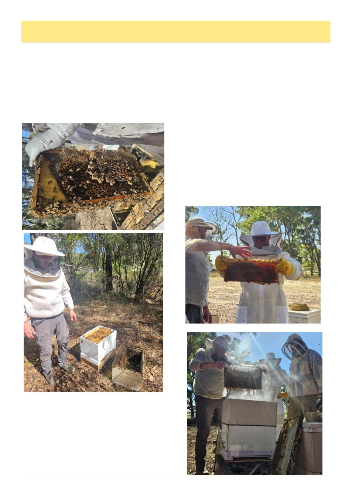

8
Australian Bee Journal
Bendigo Branch Report
(Continued on page 9
Welcome to the April Bendigo Branch Report. This
is being written as the weather cools down to single
digits at night and the trees are well into Autumn shut-
down, with a splash of colour. Brood size is shrinking
in the hives and most of the drones are gone.
The last month has seen some changes in the Bendi-
go Branch with our annual committee elections taking
place and Bendigo Branch taking on four donated hives
from one of our members for the club to use as a train-
ing source. The hives have been located on the Bendi-
go Branch bee site at Golden Gully.
A working-bee to rehome and inspect the hives was
conducted by the new Executive Committee. This
proved to be very good training activity but also al-
lowed the committee an opportunity to work together
and get to know each other in preparation for a busy
year to come.
The new committee has a diverse range of skills
both in apiary activities and also in their professional
sphere which can be leveraged for the Branch. Com-
mittee positions and new incumbents are:
Chairman / VAA Rep – Stafford Kelly;
Vice chairman / Lead Varroa Specialist – Jamie
Trimby;
Secretary – Peta Dawe;
Assistant Secretary – Angelique Perry;
Treasurer – Michael St Clair;
Assistant Treasurer / Librarian – Ben Flood;
Master Beekeeper / Education – Zac Long;
Club Bee Manager – Doug Barrett;
Events – Kris Barker;
Media / Communication – Jessica Ruebin;
Resources VAA Rep - Jacob Nixon.
Congratulations to all new incumbents and I am sure
this will prove to be a dynamic committee.
Apart from the changeover of the committee, this
previous month has been a busy one with our annual
pack down activity conducted at Margie‟s in Huntly.
The ability to have open hives, live extraction and run-
ning commentary by the instructors made for a very
interesting and enlightening day. Well done Jamie for
co-ordination.
Photo top: Hive clean up
Bottom: Jamie transferring frames into a new box
Above and below: Packdown